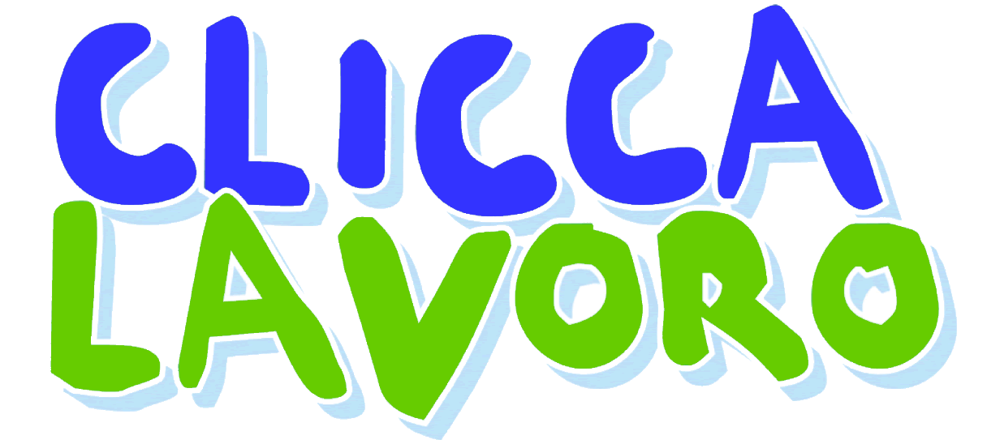

Profili veri.
Ricerche reali.
Il rilancio di Clicca Lavoro come portale del lavoro in tempo reale: candidati attivi adesso, annunci verificati, qualità del match invece di volume di CV.
Tutto questo brief poggia su un'ipotesi di prodotto che va validata prima.
Le conclusioni che seguono — posizionamento sulla qualità del match, promessa "profili veri / ricerche reali", payoff orientati su realtà e attività in tempo reale, direzioni di logo, tono di voce — sono deduzioni costruite ipotizzando un portale con caratteristiche centrate sulla qualità dell'incontro tra domanda e offerta: candidati attivi pre-screenati con domande guida, annunci verificati con scadenza dichiarata, doppio binario candidato↔azienda, meno volume e più pertinenza.
Se il modello di prodotto è un altro — per esempio un aggregatore generalista di volume, una bacheca self-service tradizionale, un servizio di intermediazione con agenti, un portale premium per profili senior, o un mix — cambiano anche le conclusioni. Posizionamento, palette, payoff, simbolo e tono di voce dipendono direttamente dal modello sottostante.
Quindi prima di entrare nel merito grafico e di copy, va validata l'ipotesi di partenza. Se il prodotto è quello descritto sopra, il brief è coerente e si può passare alla fase 2. Se è diverso, va riadattato a partire da qui.
Sintesi
In tre frasi: dove andiamo, perché ci differenziamo, cosa promettiamo.
Clicca Lavoro torna su un mercato saturo di portali generalisti e bacheche di annunci. Non vogliamo competere sul volume, ma costruire un brand riconoscibile per la qualità del match: candidati attivi adesso, annunci reali, ricerche specifiche.
Il logo recupera l'energia del marchio anni 2000 — impaginazione su due righe, blu+verde, tono umano — ma scarta il drop shadow datato e il lettering grunge. Salta la versione 2015 con la porta: cliché di settore, già adottato da troppi player.
Il payoff lavora su una promessa simmetrica: per le aziende qualità invece di tonnellate di CV; per i candidati annunci reali invece di posizioni fantasma. Stesso valore, due porte d'ingresso.
L'eredità del 2000, ripulita.
Cosa salviamo dal logo storico, cosa scartiamo, perché archiviamo la versione 2015.
DNA da preservare
- Impaginazione su due righe (CLICCA / LAVORO): due tempi, gesto + oggetto.
- Coppia cromatica blu freddo + verde acceso: codice visivo proprietario nel mercato italiano del recruiting.
- Tono umano: il marchio sembra parlare, non istituzionalizzarsi.
Da scartare
- Drop shadow azzurro chiaro (datato, anni 2000 web).
- Lettering hand-drawn poco scalabile (problemi in app, favicon, social avatar).
- Proporzioni irregolari delle lettere (oggi pesano in piccolo formato).
Logo 2015 — archiviato
Pulito ma generico. La metafora "porta che si apre" è ormai cliché di settore, e il wordmark unito ("Cliccalavoro") perde la pausa concettuale fra il gesto e l'oggetto. Tappa di transizione, non eredità da rilanciare.

Espressivo, energico, datato. Da cui ereditiamo struttura e palette concettuale.
Stessa impaginazione, lettering geometrico contemporaneo, palette aggiornata.
La promessa.
Una sola frase, simmetrica per aziende e candidati.
Solo ricerche reali.
La promessa è simmetrica: l'azienda riceve meno CV ma più rilevanti; il candidato riceve meno annunci ma più reali. Entrambi guadagnano tempo e probabilità di chiusura.
Doppio binario.
Due audience, una promessa simmetrica. Stesso peso comunicativo per entrambi.
Lato candidati
Persone tra 25 e 45 anni, RAL 20-40k, con esperienza concreta. Cercano lavoro adesso, non in modo passivo. Operativi: commerciali, impiegati qualificati, tecnici, customer care, retail manager, middle management. Stanchi di annunci copiati, recruiter generici, processi che non rispondono.
Cosa vogliono sentirsi dire: "Qui gli annunci sono veri, le aziende rispondono, le posizioni esistono davvero e chiudono in tempi normali."
Lato aziende
Aziende medie e grandi con alto turnover su ruoli operativi e middle management — retail, GDO, hospitality, logistica, contact center, sanità privata, manifatturiero strutturato, servizi B2B. HR e talent acquisition lavorano su volumi alti ma cercano qualità.
Cosa vogliono sentirsi dire: "Qui i candidati sono attivi adesso, già scremati con domande guida. Pubblichi e ricevi profili che si possono contattare oggi."
Posizionamento.
Lo spazio di mercato non presidiato dai big italiani.
| Player | Posizionamento percepito | Limite per il nostro target |
|---|---|---|
| Indeed | Volume globale, motore di aggregazione. | Annunci spesso duplicati, candidati passivi, qualità del match bassa. |
| Premium, white collar, networking. | Costoso per le aziende, lontano dai profili 20-40k operativi. | |
| InfoJobs / Subito Lavoro | Generalisti italiani, volume. | Percepiti come bacheche; CV in massa, qualità non garantita. |
| Adecco / Randstad / Manpower | Agenzie con piattaforma. | Modello agenzia, costi elevati, focus somministrazione. |
| JobToday | Veloce, mobile-first, "lavoro in 24h". | Skewed verso retail/hospitality entry-level e gig economy. |
| Welcome to the Jungle / Jobtech | Brand moderni, employer branding. | Tech-skewed, target white collar, copertura italiana parziale. |
| Clicca Lavoro 2026 | Qualità del match: profili veri + annunci reali. | Da costruire: il punto è proprio questo posizionamento. |
Spazio di mercato non presidiato: il portale italiano che dichiara apertamente la qualità del match invece del volume, e che la mantiene con strumenti concreti — domande guida, verifica annunci, profili attivi.
Come parliamo.
Italiano contemporaneo. Diretto, concreto, mai marketese.
Voce diretta, italiana, contemporanea. Niente anglicismi gratuiti. Il brand parla sia al candidato che all'HR con la stessa disinvoltura: pragmatico, concreto, con un pizzico di ironia gentile quando serve sdrammatizzare.
- "Cerca lavoro adesso, non fra sei mesi."
- "Profili veri, ricerche reali."
- "Domande chiare, candidati pronti."
- "L'annuncio che vedi è quello che c'è."
- "Pubblica oggi, ricevi profili oggi."
- "Sblocca il tuo potenziale di carriera."
- "Il job board next-gen powered by AI."
- "La porta verso il tuo futuro professionale."
- "Centinaia di migliaia di annunci ogni giorno."
- "Trasforma la tua passione in opportunità."
Palette 2026.
Blu indaco e mint elettrico. Riconoscibilità storica, codici nuovi.
Manteniamo la coppia blu+verde come patrimonio del brand, ma i codici cambiano. Il blu si fa più profondo (indaco), il verde più elettrico (mint). Più premium, più tech, più "live".
Logica d'uso: indaco e mint sono sempre presenti insieme nel logo. Proporzione tipica in pagina: 60% neutri, 25% indaco, 12% mint, 3% accenti.
Tipografia.
Geometrica con personalità. Niente font corporate sterili.
Per il wordmark serve un sans-serif geometrico contemporaneo. Candidate da testare in fase 2: Inter Display, General Sans, Plus Jakarta Sans, Söhne, Manrope. Per l'interfaccia: Inter come font di sistema.
Ricerche reali.
Wordmark.
Due righe, due voci, una promessa.
L'impaginazione su due righe non è nostalgia: è ritmo concettuale. CLICCA è il gesto, LAVORO è l'oggetto. Il blu è autorità e fiducia, il mint è attività e presente. Insieme dichiarano simmetria tra i due lati del mercato.
Direzioni di simbolo.
Sei concept per accompagnare il wordmark. Vincolo: niente porte, niente maniglie, niente cursori, niente frecce di ricerca. Tutti progettati per scalare da 16px (favicon) a 5m (totem fiera).
Signal / Pulse
Barre verticali con la centrale mint che svetta. Concept: "mercato vivo, attività in tempo reale". Animabile.
Click Ripple
Onde concentriche da un punto centrale. Concept: "ogni click genera un'onda nel network di candidati attivi". Niente cursore, solo l'effetto.
Match Cell
Griglia 3×3 con una cella mint accesa al centro. Concept: "tra mille candidati, quello giusto". Storytelling forte sulla qualità del match.
Verified
Spunta mint dentro un quadrato indaco arrotondato. Concept: "annunci verificati, profili reali". Massima leggibilità a piccoli formati.
CL · Monogramma
Una "C" indaco apre lo spazio dove l'"L" mint si inserisce. Concept: l'eredità tipografica del 2000 reinterpretata. Citazione esplicita.
Connettori
Una freccia indaco (azienda) e una freccia mint (candidato) convergono in un punto centrale. Concept letterale del doppio binario.
Sei direzioni, sei concetti diversi. La scelta finale viene presa in fase 2, dopo bozze SVG ad alta fedeltà e test su scalabilità, mockup app icon e applicazioni di brand. Lascia un commento qui sotto per indicare quali due o tre meriterebbero la fase di approfondimento.
Riferimenti.
Brand fuori dal recruiting il cui sistema visivo è coerente con quello che vogliamo costruire. Più la freschezza diretta di JobToday come tono.
Payoff.
Tre territori, dieci direzioni. Da discutere, non c'è ancora una scelta.
Lascia un commento qui sotto con la tua preferenza, o proponi una variante.